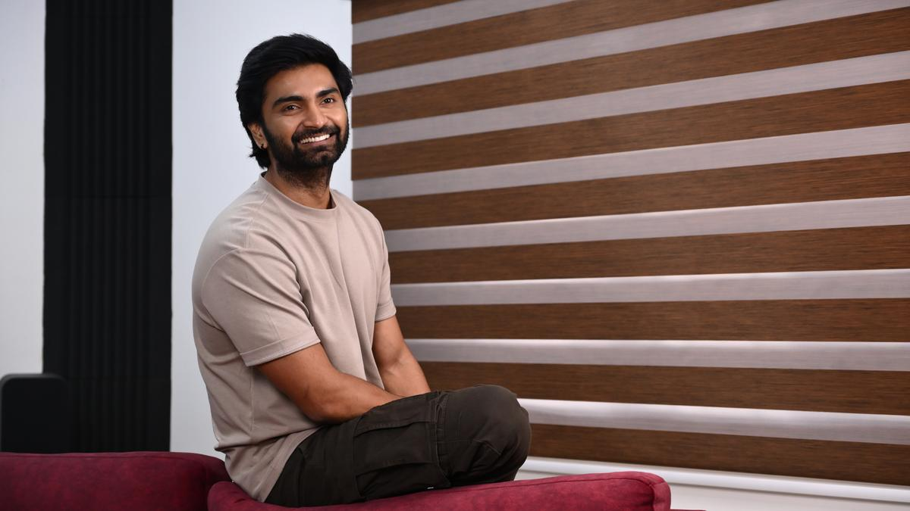

Atharvaa Murali (born Vijay Murali) is an Indian actor who works in Tamil cinema. The son of actor Murali and grandson of director S. Siddalingaiah, Atharvaa began his acting career with Baana Kaathadi (2010).[1] He then garnered critical acclaim for his performance as a youngster suffering from delusion in the romantic thriller Muppozhudhum Un Karpanaigal (2012), before signing on to feature in Bala's period film Paradesi (2013).